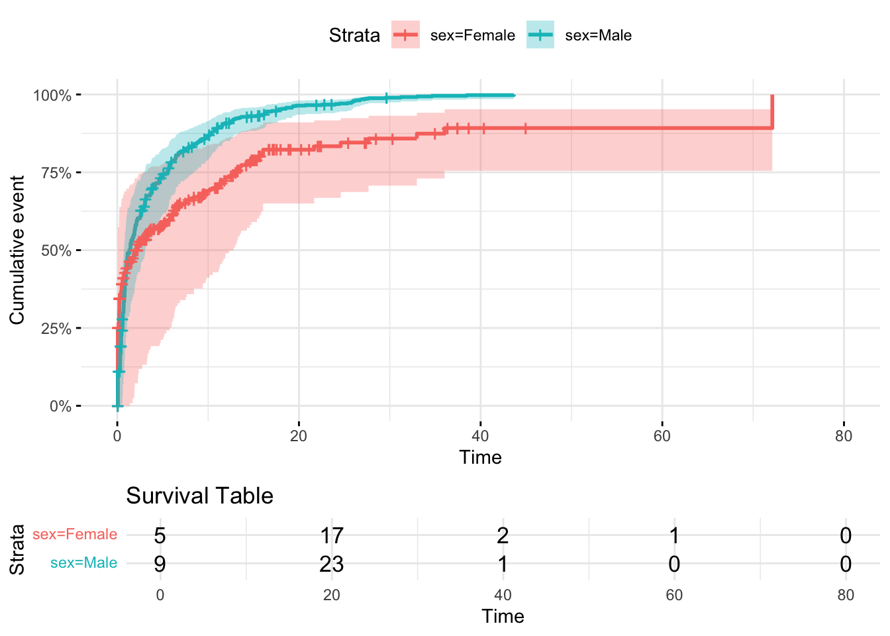
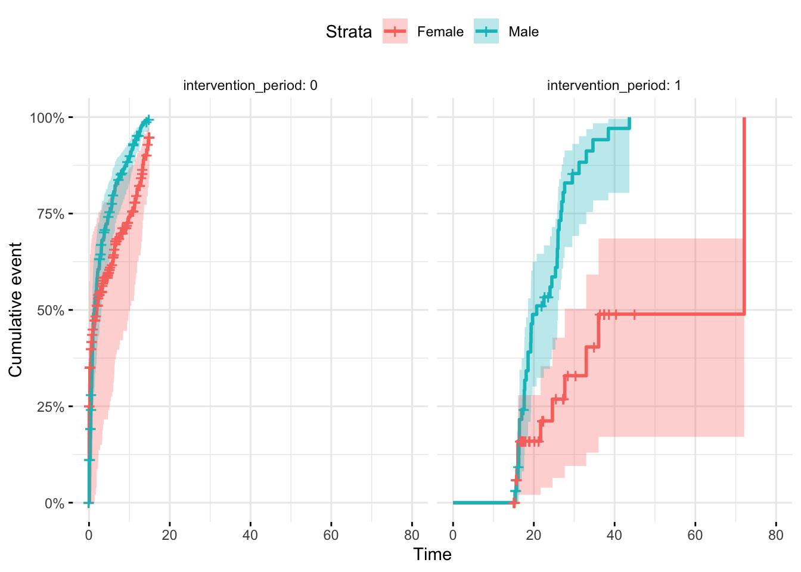
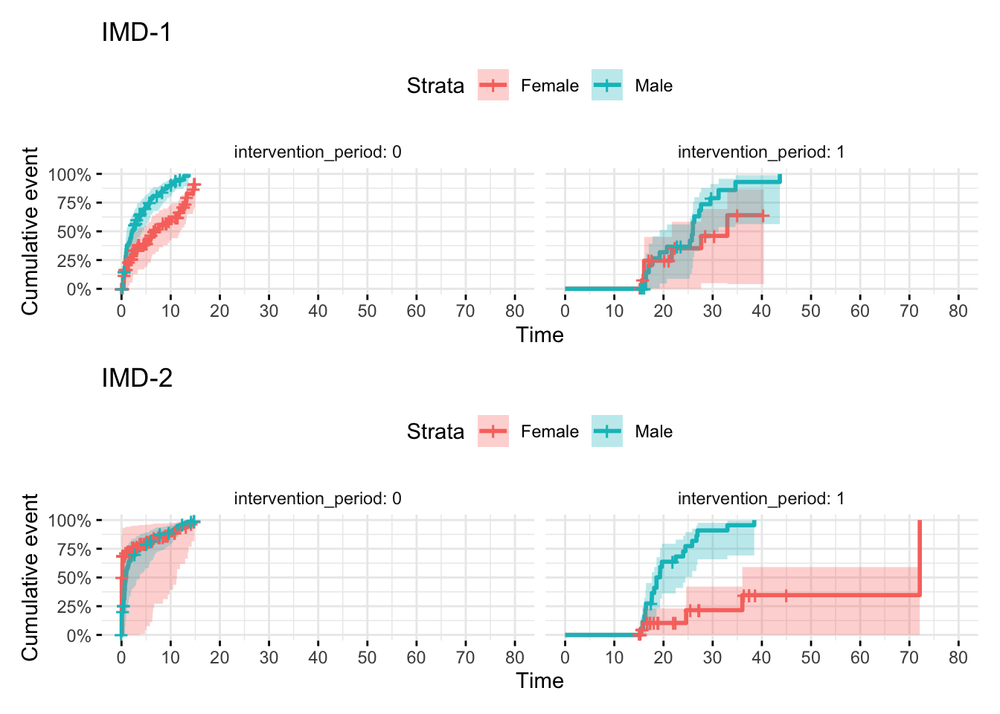
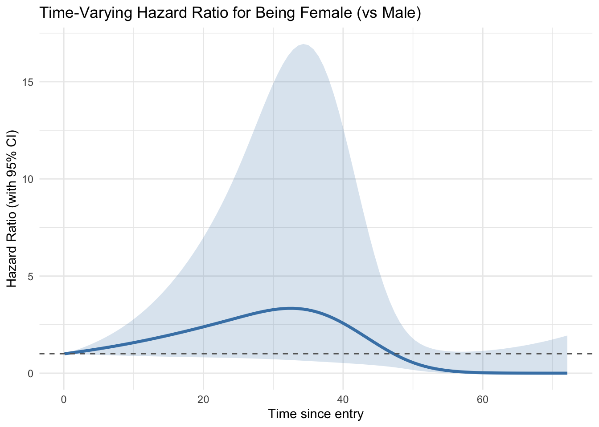
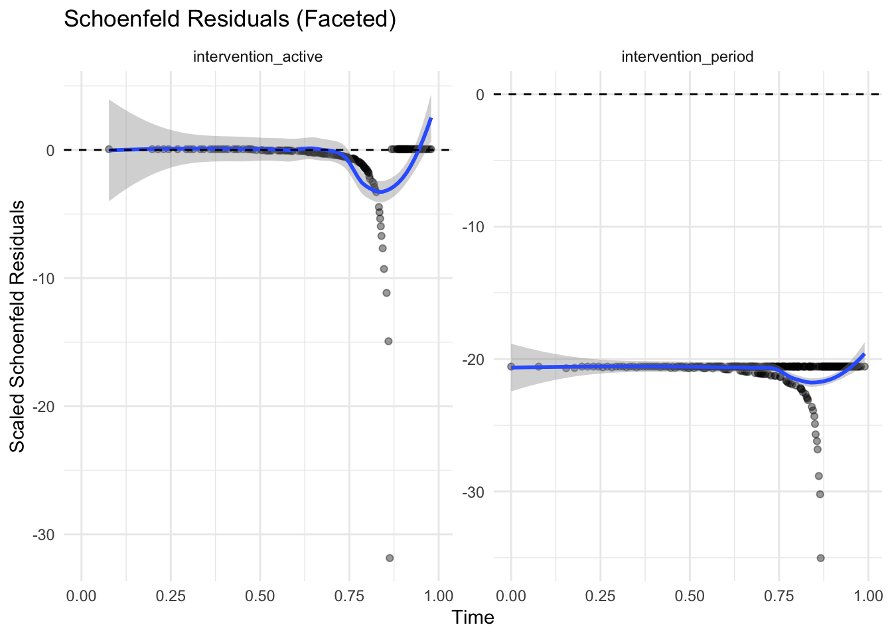

set.seed(2349871)11 Survival Analysis with Cox-PH
Set a random seed for reproducibility
11.1 Create dummy dataset
You would provide a real data set at this point. The data are basically a tibble/df in which you provide a list of times at which a case became either an event/failure or censored (lost-to-followup or end of study). The key variables are some kind of time to event variable and a status variable indicating whether the case is an event of censored at that time to event. Additional covariates to the model can be added at this stage (here age and sex are included).
# Number of observations
n <- 400
# Create dummy dataset
set.seed(123)
dummy_data <- tibble(
id = 1:400,
time_to_event = rexp(n, rate = 0.1),
sex = sample(c("Male", "Female"), size = n, replace = TRUE),
age = rnorm(n, mean = 50, sd = 10),
status = ifelse(sex == "Male",
rbinom(n, size = 1, prob = 0.8),
rbinom(n, size = 1, prob = 0.4))
) %>%
# Introduce start times for delayed entry (uniformly sampled)
rowwise() %>%
mutate(start_time = runif(1, min = 0, max = time_to_event * 0.8)) %>%
ungroup() %>%
# Ensure start_time is always less than time_to_event
mutate(start_time = pmin(start_time, time_to_event - 0.01))
# Display first 50 rows
kable(dummy_data[1:20,])| id | time_to_event | sex | age | status | start_time |
|---|---|---|---|---|---|
| 1 | 8.4345726 | Female | 53.58856 | 1 | 0.5023013 |
| 2 | 5.7661027 | Female | 43.91443 | 1 | 0.1318085 |
| 3 | 13.2905487 | Female | 47.97759 | 1 | 4.4378939 |
| 4 | 0.3157736 | Female | 47.26752 | 0 | 0.2157436 |
| 5 | 0.5621098 | Male | 45.31300 | 0 | 0.1486168 |
| 6 | 3.1650122 | Female | 57.04167 | 0 | 1.1253176 |
| 7 | 3.1422729 | Male | 38.02636 | 0 | 1.0394217 |
| 8 | 1.4526680 | Male | 58.66366 | 1 | 0.4087817 |
| 9 | 27.2623646 | Male | 58.64152 | 1 | 20.2363141 |
| 10 | 0.2915345 | Female | 38.01378 | 0 | 0.2169144 |
| 11 | 10.0483006 | Male | 56.39492 | 1 | 2.2529348 |
| 12 | 4.8021473 | Female | 74.30227 | 0 | 2.8018030 |
| 13 | 2.8101363 | Female | 44.42785 | 0 | 0.4873561 |
| 14 | 3.7711783 | Male | 58.44904 | 1 | 2.8366736 |
| 15 | 1.8828404 | Female | 42.17798 | 1 | 0.0968518 |
| 16 | 8.4978613 | Male | 61.10711 | 1 | 6.7212570 |
| 17 | 15.6320354 | Female | 52.49825 | 0 | 2.6287891 |
| 18 | 4.7876042 | Male | 66.51915 | 0 | 1.2200058 |
| 19 | 5.9093484 | Male | 35.41029 | 1 | 0.5756645 |
| 20 | 40.4101171 | Female | 49.48702 | 0 | 18.8865329 |
11.2 Fit a Cox Proportional Hazards (Cox-PH) model
The example below applies a Cox-PH model which tests whether survival is explained by age and sex.
# Fit a Cox Proportional Hazards model
cox_model <- coxph(Surv(time_to_event, status) ~ age + sex, data = dummy_data)
# Summary of the Cox PH model
summary(cox_model)Call:
coxph(formula = Surv(time_to_event, status) ~ age + sex, data = dummy_data)
n= 400, number of events= 241
coef exp(coef) se(coef) z Pr(>|z|)
age -0.003303 0.996702 0.006417 -0.515 0.607
sexMale 0.802430 2.230955 0.140936 5.694 1.24e-08 ***
---
Signif. codes: 0 '***' 0.001 '**' 0.01 '*' 0.05 '.' 0.1 ' ' 1
exp(coef) exp(-coef) lower .95 upper .95
age 0.9967 1.0033 0.9842 1.009
sexMale 2.2310 0.4482 1.6925 2.941
Concordance= 0.594 (se = 0.02 )
Likelihood ratio test= 36.97 on 2 df, p=9e-09
Wald test = 34.31 on 2 df, p=4e-08
Score (logrank) test = 36.18 on 2 df, p=1e-08exp(coef) is essentially an odds ratio similar to those in a logistic regression.
In this example, being male carries a proportional hazard of 1.04 (95% CI 0.76 - 1.22) compared to being female.
If you like P values, Pr(>|z|) is exactly that.
11.3 Plot the survival curve as a null model (no splits on factors)
ggsurvplot(survfit(cox_model),
data = dummy_data,
pval = TRUE,
risk.table = TRUE,
risk.table.title = "Survival Table",
surv.scale = "percent", # You can change this to other scales like "probability"
)
11.4 Plot the survival curve, with splits on factors
# Plot separate survival curves for each sex without covariates
ggsurvplot(survfit(Surv(time_to_event, status) ~ sex, data = dummy_data),
data = dummy_data, pval = TRUE,
risk.table = TRUE, risk.table.title = "Survival Table",
surv.scale = "percent", # You can change this to other scales like "probability"
conf.int = TRUE, # Show confidence intervals
ggtheme = theme_minimal())
11.5 Add some front censoring (i.e. delayed entry to study)
# Fit Cox model to get p-value
cox_model <- coxph(Surv(start_time, time_to_event, status) ~ sex, data = dummy_data)
# Extract the p-value from the model
pval_text <- paste0("Cox PH p = ", signif(summary(cox_model)$coefficients[5], 3))
# Save ggsurvplot output to an object
plot_obj <- ggsurvplot(
survfit(Surv(start_time, time_to_event, status) ~ sex, data = dummy_data),
data = dummy_data,
risk.table = TRUE,
risk.table.title = "Survival Table",
surv.scale = "percent",
conf.int = TRUE,
ggtheme = theme_minimal()
)
# Add annotation to the survival plot component (plot_obj$plot)
plot_obj$plot <- plot_obj$plot +
annotate("text", x = max(dummy_data$time_to_event) * 0.7, y = 0.4, label = pval_text)
# Then print the plot object
print(plot_obj)
11.6 Time to event analysis
Add fun = "event"
ggsurvplot(
survfit(Surv(start_time, time_to_event, status) ~ sex, data = dummy_data),
data = dummy_data,
risk.table = TRUE,
risk.table.title = "Survival Table",
surv.scale = "percent",
conf.int = TRUE,
ggtheme = theme_minimal(),
fun="event"
)
11.7 Strata or not?
In survival analysis, strata() is used inside the formula of a Cox model to adjust for a covariate without estimating its coefficient. Instead, it allows the baseline hazard function to vary across the levels of that variable.
coxph(Surv(...) ~ sex + age)assumes sex and age both have proportional effects (linear in the log-hazard) across the entire population.coxph(Surv(...) ~ sex + strata(age_group))means:You still estimate the effect of sex.
But you allow age_group to define separate baseline hazards (one for each stratum).
No coefficient will be estimated for
age_group, but the model assumes different baseline hazards in each group.
Why use strata()?
When you suspect that a variable (e.g., age_group, study site) violates the proportional hazards assumption.
Or if you want to control for it without estimating its effect on the hazard ratio (non-parametric adjustment).
Using STRATA is a useful way to account for
11.8 Survival-based difference-in-differences model using a Cox proportional hazards framework, with time-varying intervention exposure and stratification
In difference-in-difference logic, you usually want to (a) Compare treated vs control groups, while (b) adjusting for baseline differences between them and (c) estimating the “difference-in-differences” (i.e., the effect of the treatment after controlling for secular trends or inherent group differences).
stratifying by case/control group, then introducing an intervention period and intervention group as time varying covariates satisfies the DID survival study design nicely.
Underlying assumptions in this example are that…
Baseline hazard may differ by sex, so is stratified. Sex is the case/control variable here.
Only males are subject to intervention AND only then during the intervention period
The period of the intervention may be subject to secular trend in both groups
dummy_data <- dummy_data %>%
mutate(
intervention_active = case_when(
sex == "Male" & time_to_event <= 15 ~ 0, #No Intervention, Male
sex == "Male" & time_to_event > 15 ~ 1, #Intervention, Male
sex == "Female" ~ 0 # No intervention, Female
),
intervention_period = case_when(
time_to_event <= 15 ~0,
time_to_event > 15 ~ 1
)
)Adding both the intervention period and intervention as TVCs allows the females to become an active comparitor group. Stratifying by sex.
coxph(Surv(start_time, time_to_event, status) ~ intervention_period + intervention_active + strata(sex), data = dummy_data)Call:
coxph(formula = Surv(start_time, time_to_event, status) ~ intervention_period +
intervention_active + strata(sex), data = dummy_data)
coef exp(coef) se(coef) z p
intervention_period -2.057e+01 1.164e-09 3.659e+03 -0.006 0.996
intervention_active 6.008e-02 1.062e+00 4.788e+03 0.000 1.000
Likelihood ratio test=147.9 on 2 df, p=< 2.2e-16
n= 400, number of events= 241 Does intervention_period show a general hazard shift post-time-9 across both sexes?
Does intervention_active show a male-specific shift, above and beyond the secular trend?
plot_obj <- ggsurvplot(
survfit(Surv(start_time, time_to_event, status) ~ sex, data = dummy_data),
data = dummy_data,
risk.table = TRUE,
surv.scale = "percent",
conf.int = TRUE,
facet.by = "intervention_period", # facet by sex to match strata
ggtheme = theme_minimal(),
fun="event"
)
print(plot_obj)
11.9 Adding additional covariates
I recommend filtering the dataset and using the same model approach as above. This makes it pretty easy to interpret because you get a single estimate for (a) the secular trend post intervention and (b) the trend in the intervention arm above and beyond (a). Keep it simple and stupid.
# Create a new variable IMD
dummy_data<- dummy_data %>% mutate(imd = factor(sample(c("IMD1","IMD2"),replace = T,size=400)))
IMD1plot <- plot_obj <- ggsurvplot(
survfit(Surv(start_time, time_to_event, status) ~ sex, data = filter(dummy_data,imd=="IMD1")),
data = filter(dummy_data,imd=="IMD1"),
risk.table = TRUE,
surv.scale = "percent",
conf.int = TRUE,
facet.by = "intervention_period", # facet by sex to match strata
ggtheme = theme_minimal(),
fun="event",
xlim = c(0,80),
break.time.by = 10
)
IMD2plot <- plot_obj <- ggsurvplot(
survfit(Surv(start_time, time_to_event, status) ~ sex, data = filter(dummy_data,imd=="IMD2")),
data = filter(dummy_data,imd=="IMD2"),
risk.table = TRUE,
surv.scale = "percent",
conf.int = TRUE,
facet.by = "intervention_period", # facet by sex to match strata
ggtheme = theme_minimal(),
fun="event",
xlim = c(0,80),
break.time.by = 10 # Forces ticks up to 60
)
(IMD1plot+ggtitle("IMD-1")) / (IMD2plot + ggtitle("IMD-2"))
11.10 Add exposure time for time-varying effects
If you expect that longer exposures are linked to increasing effects then you should consider adding an exposure time to the model. For studies where there’s no delayed entry to the study and where the intervention happens immediately, you can use the exit time, or log(exit_time) as the exposure.
You need to convert factors to numeric representations for this to work.
You also need to explain the relationship using a model that modifies the coefficients at each timepoint.
function(x, t, ...) x * t
Where:
x = the value of the covariate (e.g. sex_numeric, 0 or 1)
t = the follow-up time for each observation
… = other arguments passed internally (ignored here)
So the key part of this model is x*t which makes the value of x scale linearly with time.
dummy_data <- dummy_data %>% mutate(sex_numeric = ifelse(sex == "Female", 1, 0))
coxph(Surv(time_to_event, status) ~ age + sex_numeric + tt(sex_numeric),
data = dummy_data,
tt = function(x, t, ...) x * t)Call:
coxph(formula = Surv(time_to_event, status) ~ age + sex_numeric +
tt(sex_numeric), data = dummy_data, tt = function(x, t, ...) x *
t)
coef exp(coef) se(coef) z p
age -0.003238 0.996768 0.006455 -0.502 0.61600
sex_numeric -0.553435 0.574971 0.208549 -2.654 0.00796
tt(sex_numeric) -0.026571 0.973779 0.016944 -1.568 0.11684
Likelihood ratio test=39.51 on 3 df, p=1.35e-08
n= 400, number of events= 241 In this example, the females (1) have hazard 0.57 that of the males.
Per unit time increase, there’s a (non-significant) hazard decrease of 1-0.97 = 0.03
You could also try a non-linear fits
Log linear :
tt = function(x, t, ...) x * log(t + 1)- [t+1 avoids
log(0)for people with events at time 0.
- [t+1 avoids
Square Root :
tt = function(x, t, ...) x * sqrt(t)- The effect ramps up gently, useful for cumulative effects that accelerate less than linearly
Quadratic :
tt = function(x, t, ...) x * (t^2)- Useful when you suspect that the effect of a variable intensifies over time, possibly even reversing. Be careful because quadratic terms can go crazy at high t values, so center or scale t
Splines :
tt = function(x, t, ...) x * ns(t, df = 3))- No specific shape is assumed — this fits a smooth and flexible curve for how the effect evolves over time. this is a good option for when you don’t know and can’t predict the true time-event shape.
11.10.1 Example using splines
# Fit the model with natural spline time-varying effect
cox_tv_model <- coxph(
Surv(time_to_event, status) ~ age + sex_numeric + tt(sex_numeric),
data = dummy_data,
tt = function(x, t, ...) x * ns(t, df = 3) # ns is splines, df = 3 defines the knot numbers (1=linear, 2/3 good start point. Use AIC to test fits with different values of df)
)
cox_tv_modelCall:
coxph(formula = Surv(time_to_event, status) ~ age + sex_numeric +
tt(sex_numeric), data = dummy_data, tt = function(x, t, ...) x *
ns(t, df = 3))
coef exp(coef) se(coef) z p
age -3.380e-03 9.966e-01 6.481e-03 -0.521 0.6020
sex_numeric -7.356e-01 4.792e-01 4.888e-01 -1.505 0.1324
tt(sex_numeric)1 1.366e+00 3.918e+00 1.326e+00 1.030 0.3032
tt(sex_numeric)2 -4.419e+00 1.204e-02 2.629e+00 -1.681 0.0928
tt(sex_numeric)3 -9.504e+00 7.457e-05 5.086e+00 -1.869 0.0617
Likelihood ratio test=43.01 on 5 df, p=3.671e-08
n= 400, number of events= 241 # Create a data frame of times to predict the effect over
time_vals <- seq(0.1, max(dummy_data$time_to_event), length.out = 100) # start at 0.1 to avoid log(0)
# Get the spline basis at these time points
spline_basis <- ns(time_vals, df = 3)
# Extract coefficients for the time-varying effect of sex_numeric
coef_tv <- coef(cox_tv_model)[grepl("tt\\(sex_numeric\\)", names(coef(cox_tv_model)))]
# Multiply spline basis by coefficients to get log(HR) over time
log_hr <- as.vector(spline_basis %*% coef_tv)
hr <- exp(log_hr)
# Combine into a data frame for plotting
plot_df <- data.frame(
time = time_vals,
log_hr = log_hr,
hr = hr
)
# Extract variance-covariance matrix
vcov_tv <- vcov(cox_tv_model)
coef_tv <- coef(cox_tv_model)[grepl("tt\\(sex_numeric\\)", names(coef(cox_tv_model)))]
#Compute log(HR), SE, CI at each time point
log_hr <- as.vector(spline_basis %*% coef_tv)
# Compute standard error at each point
se_log_hr <- sqrt(rowSums((spline_basis %*% vcov_tv[grepl("tt\\(sex_numeric\\)", rownames(vcov_tv)),
grepl("tt\\(sex_numeric\\)", colnames(vcov_tv))]) * spline_basis))
# 95% confidence intervals on log-HR scale
log_hr_lower <- log_hr - 1.96 * se_log_hr
log_hr_upper <- log_hr + 1.96 * se_log_hr
# Convert to HR scale
hr <- exp(log_hr)
hr_lower <- exp(log_hr_lower)
hr_upper <- exp(log_hr_upper)
# Combine for plotting
plot_df <- data.frame(
time = time_vals,
hr = hr,
hr_lower = hr_lower,
hr_upper = hr_upper
)
# Plot with ggplot2
ggplot(plot_df, aes(x = time, y = hr)) +
geom_line(color = "steelblue", linewidth = 1.2) +
geom_ribbon(aes(ymin = hr_lower, ymax = hr_upper), alpha = 0.2, fill = "steelblue") +
geom_hline(yintercept = 1, linetype = "dashed", color = "gray40") +
labs(
title = "Time-Varying Hazard Ratio for Being Female (vs Male)",
x = "Time since entry",
y = "Hazard Ratio (with 95% CI)"
) +
theme_minimal()
This approach to plotting the Hazard at different time points can be really informative. The HR is significantly different from 1 when the CI doesn’t overlap the horizontal line at HR 1.0. This dummy data is a bit crazy but you could interpret as follows.
- the hazard for females is highest around 35 weeks after initiation of the study, but eventually declines in to a long-range protective effect. Probably not significant at either end, and possibly significant in the middle, so overall you could say this is a hazard increase, even though the end-point says otherwise
11.11 Time varying covariates in DID models
Here we can’t just use the exit time as a measure of the time-varying effects. We need to difference the exposure start time and exit times to get an overall duration of exposure for each person in the study.
In the example above the intervention started in period 15
dummy_data <- dummy_data %>% mutate(exposure_duration = case_when(
time_to_event<=15 ~ 0,
time_to_event >15 ~ time_to_event-15
)
)
coxph(Surv(start_time, time_to_event, status) ~ intervention_period + intervention_active+ intervention_active:exposure_duration + strata(sex), data = dummy_data)Call:
coxph(formula = Surv(start_time, time_to_event, status) ~ intervention_period +
intervention_active + intervention_active:exposure_duration +
strata(sex), data = dummy_data)
coef exp(coef) se(coef) z
intervention_period -1.411e+01 7.428e-07 1.448e+02 -0.097
intervention_active 3.169e+01 5.792e+13 1.603e+02 0.198
intervention_active:exposure_duration -7.244e+01 3.451e-32 5.049e+01 -1.435
p
intervention_period 0.922
intervention_active 0.843
intervention_active:exposure_duration 0.151
Likelihood ratio test=351.4 on 3 df, p=< 2.2e-16
n= 400, number of events= 241 This is pretty simple to interpret.
You might want to consider scaling the exposure time, or using Z-scores to show effects per 1 SD increase. This can help to stabilise the model if you have very large numbers in play.
11.12 Key differences between time-varying approaches
The two methods above look very similar but are very different in their purpose and intent. Choose carefully whether you use a tt() model or the DID based approach. This table highlights the key differences.
| Feature | Approach 1
|
Approach 2
|
|---|---|---|
| Time origin | Follow-up time (per subject) | Calendar time (study-wide) |
| Varies for | Everyone | Only those in the intervention group |
| What varies? | Effect size of sex over time | Effect of intervention increases with duration of exposure |
| Type of time-dependency | Coefficient changes over time | Covariate changes over time |
| Modelling assumption | Time-varying hazard ratio | Accumulating exposure effect |
To all intents and purposes, the tt() models says “The effect of being female changes over the duration of follow-up (t), regardless of calendar time or when the intervention happens.” This is essentially a non-proportional hazards model. It allows the hazard ratio for sex to vary continuously as time since entry increases.
The DID model says “For individuals in the intervention group, the duration of time they’ve been exposed to the intervention modifies their hazard.”. The effect only applies within the intervention group, the exposure variable activates at a fixed calendar time and the effect then grows over calendar time since intervention, not follow-up time
11.13 Test for proportional hazards
The Cox proportional hazards model assumes that the hazard ratio is constant over time (hence the “proportional” part). HRs apply to the whole survival curve, assuming the proportional hazards assumption holds
Interpretation in plain English is like this – “The hazard in group A is, on average, X% higher or lower than group B, over the full follow-up time.”
Let’s go back to our main model and check it
cox_model <- coxph(Surv(start_time, time_to_event, status) ~ intervention_period + intervention_active + strata(sex), data = dummy_data)Warning in agreg.fit(X, Y, istrat, offset, init, control, weights = weights, :
Loglik converged before variable 1 ; beta may be infinite.cox_modelCall:
coxph(formula = Surv(start_time, time_to_event, status) ~ intervention_period +
intervention_active + strata(sex), data = dummy_data)
coef exp(coef) se(coef) z p
intervention_period -2.057e+01 1.164e-09 3.659e+03 -0.006 0.996
intervention_active 6.008e-02 1.062e+00 4.788e+03 0.000 1.000
Likelihood ratio test=147.9 on 2 df, p=< 2.2e-16
n= 400, number of events= 241 11.14 Use cox.zph to check the PH
ph_test <- cox.zph(cox_model)
print(ph_test) chisq df p
intervention_period 6.60e-07 1 1
intervention_active 4.89e-07 1 1
GLOBAL 7.02e-07 2 1The output here is
Individual tests for each covariate
A global test for all variables
p-values: If p < 0.05, you may have a proportional hazards violation for that covariate.
11.15 Plot the residuals
The “Schoenfeld” residuals should be flat and near zero. If you see trends across time in this plot, it suggests a violation in PH may have occurred.
There should be a separate plot for each variable. strata(sex) defines different baseline hazards but does not estimate a coefficient, so there’s nothing to test for proportionality for strata terms.
# Extract residuals into a tidy format
res_df <- as.data.frame(ph_test$y)
res_df$time <- ph_test$x
# Add covariate names for faceting
res_df_long <- res_df %>%
pivot_longer(
cols = -time,
names_to = "covariate",
values_to = "residual"
)
ggplot(res_df_long, aes(x = time, y = residual)) +
geom_point(alpha = 0.4) +
geom_smooth(se = TRUE, method = "loess", span = 0.7) +
geom_hline(yintercept = 0, linetype = "dashed") +
facet_wrap(~ covariate, scales = "free_y") +
theme_minimal() +
labs(
title = "Schoenfeld Residuals (Faceted)",
y = "Scaled Schoenfeld Residuals",
x = "Time"
)